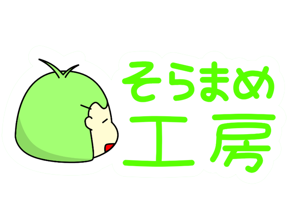

IUNWP

scratch profile
illustration
game
IUNWPとは
IUNWP(イウンワップ)とは、SORAMAME111が2022年6月1日に発足したイラストチームです。
正式名称は、illustration Urban network project(イラストアーバンネットワークプロジェクト)で、
内容は主にJR西日本の鉄道を描くというものです。
IUNWPの素材は全てクリエイティブ・コモンズ素材です。